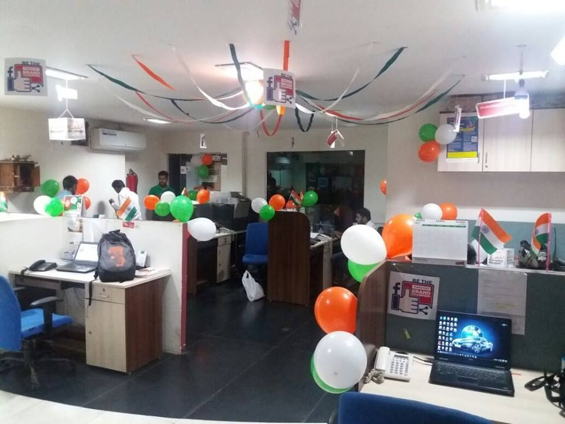

In order to analyze the provided dataset and create an interactive dashboard, various advanced MS Excel tools, including filtering, the IF statement, pivot tables, automation, etc. were put to use.

Microsoft Excel was used for data exploration, data cleaning and analysis of this project while power Bi was used for the visualization.
In this project, I cleaned up a Housing dataset using SQL.Joins and Subsquery Statement are the core function used in this project

In order to complete this project, I scraped the TimesJobs website and extracted all python-related jobs, the names of the companies, the dates the jobs were listed, and the required skills. The retrieved data was then stored as a CSV file.

In this project several KPIs measures were developed to identify causes for churning and to developed potential customer retention strategies.